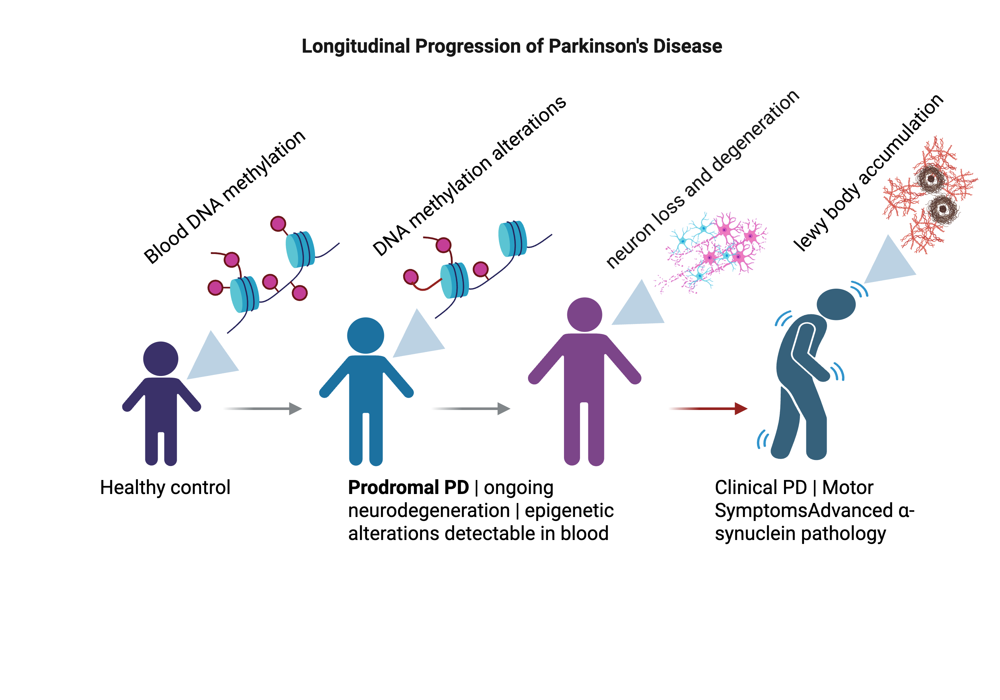

Bio
I am pursuing PhD studies in Computational Biology at University Hospital, RWTH Aachen University. I am a part of the Institute of Computational Biomedicine and Disease Modelling, which collaborates with the Joint Research Computation group and Centre for Computational Life Sciences at RWTH Aachen. My PhD project focuses on developing mathematical and data-driven computational models for identifying epigenetic networks in blood cancers. The project is co-supervised by Prof. Dr. Thomas Stiehl and Prof. Dr. Wolfgang Wagner , director of Institute of Stem Cell Biology.
Prior to this, I completed my Master degree in Bioinformatics from Saarland University. My Master thesis, titled Bioinformatic Analysis of Blood DNA Methylomes to Identify Prodromal Biomarkers Linked to Parkinson's Disease, was supervised by Prof. Dr. Jörn Walter and Prof. Dr. Fabian Müller and was submitted in March 2025. During the course of my Master studies, I worked as a Database Engineer at Eurodata AG from Sept '22 - Nov '25.
I completed B.Tech in Information Technology from Institute of Engineering and Management, West Bengal University of Technology and worked as a Database Developer in Tata Consultancy Services from 2016-2018. During this time, I worked extensively with large and complex datasets, which sparked my interest in biomedical data science. This experience motivated my transition toward an academic career at the intersection of Computational Biology, Machine Learning, and Epigenomics.
Research
My research focuses on integrating mechanistic mathematical modeling with data-driven approaches, including deep neural networks, to study epigenomic dysregulation in blood cancers. I am particularly interested in understanding how DNA methylation landscapes diverge from healthy hematopoiesis, how they evolve during initiation and progression of blood cancers, and which regulatory mechanisms shape these trajectories.

Master Thesis project Bioinformatic analysis of human blood DNA methylomes to identify prodromal biomarkers linked to Parkinson's disease Project page with study design, methylation analysis, epigenetic age analysis, and predictive modelling results.Updates
- 22-25 Sept 2026: Will be attending GCB 2026. Will be presenting a poster summary of my Master's thesis.
- 19-20 June 2026: Visited the Smart Extended Reality Lab at IKIM Essen as a part of NextBIG eHealth Development Programme.
- 17.04.2026: Attended ByteMAL 2026 at RWTH Aachen.
- 01.12.2025: Started my PhD studies at University Hospital, RWTH Aachen.
- 16-18 Nov 2025: Selected for the fully funded NextBIG eHealth Career Development Program. Attended the kick-off event in Charite Berlin.
- 25.03.2025: Defended my Master thesis.
- 27-28 May 2024: Attended the Functional Epigenomics Conference.